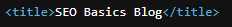
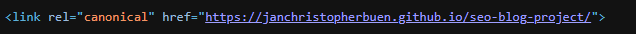
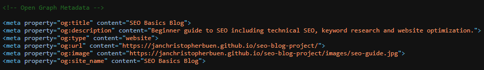
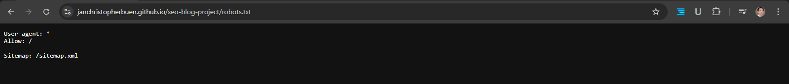
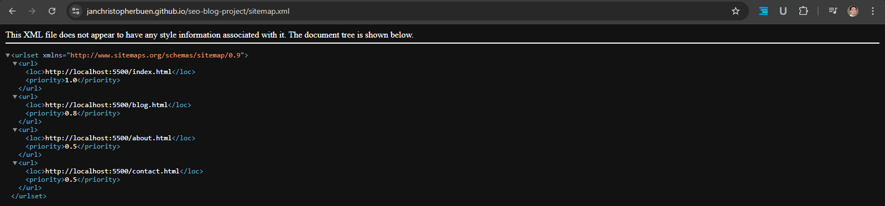
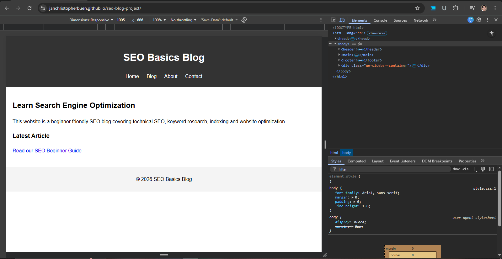
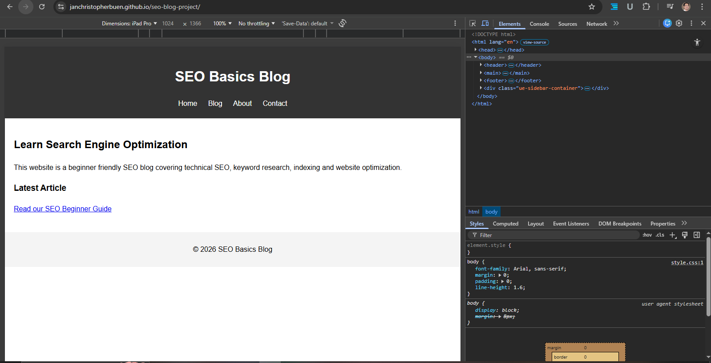
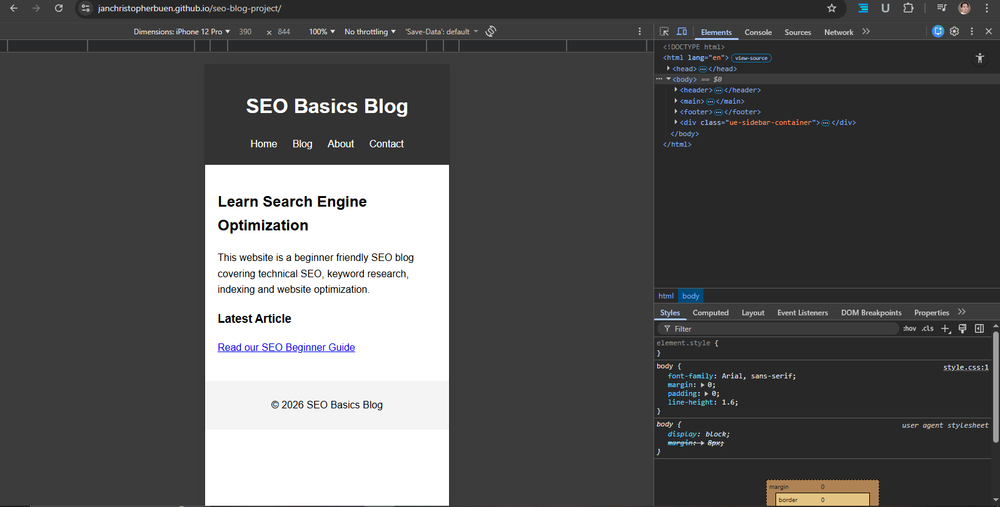

Project Overview
- Repository link
- https://github.com/janchristopherbuen/seo-blog-project
- Project goal
- This project simulates a small SEO-optimized website built to demonstrate how technical SEO elements are implemented.
- Technologies used
- HTML and CSS
GitHub Case Study
Technical SEO practice project demonstrating on-page SEO implementation, crawl management, indexing optimization, and SEO-friendly website structure using HTML and CSS.

The SEO Blog Project demonstrates the implementation of fundamental technical SEO practices including:
93
100
100
100












Repository link: https://github.com/janchristopherbuen/seo-blog-project